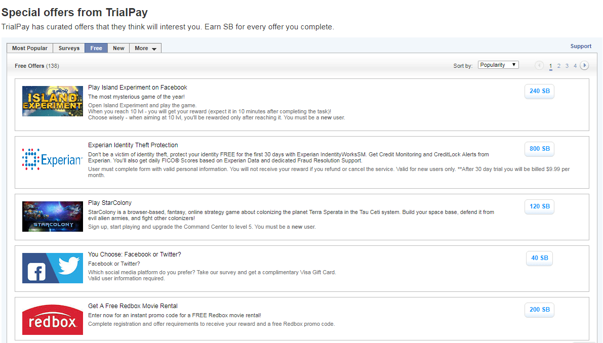
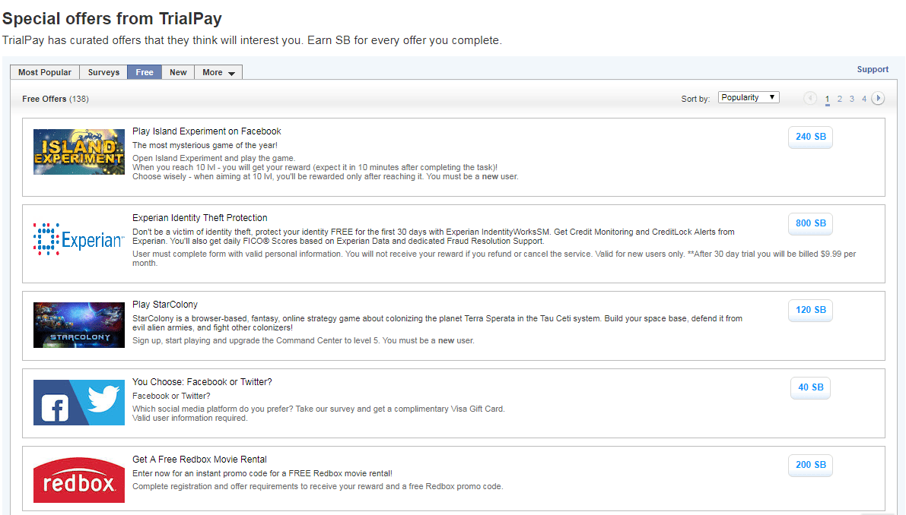
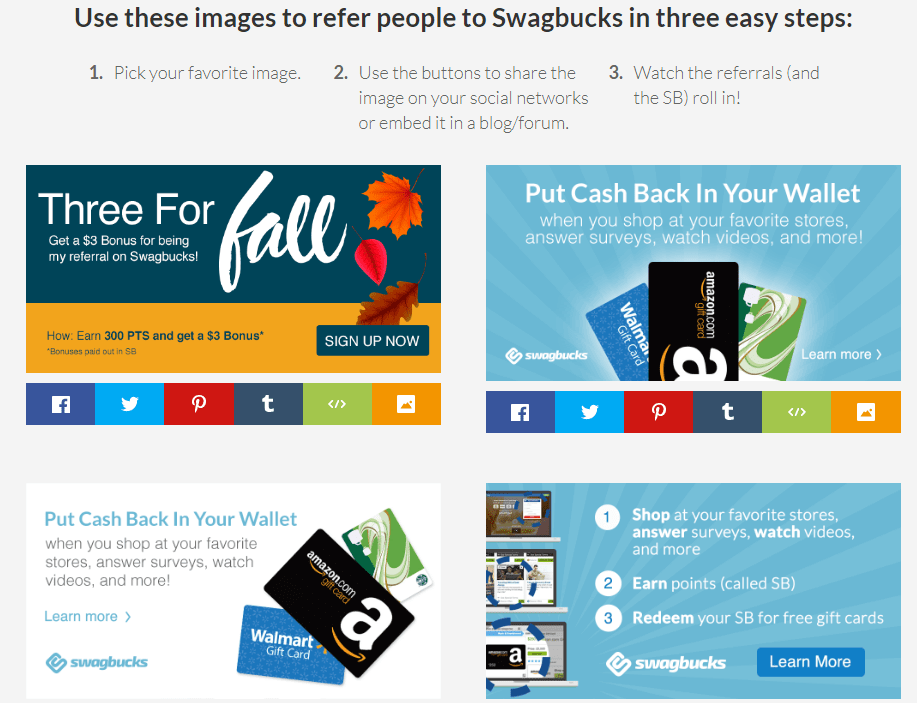

Apmaksāti aptaujas
Lai iegūtu vairāk informācijas, noklikšķiniet uz attēliem.


Lai iegūtu vairāk informācijas, noklikšķiniet uz attēliem.
Neraugoties uz visām iespējām radīt naudu Swagbucks, piedāvā vienkāršu un ļoti estētisku saskarni, tad jūs redzēsiet opciju izvēlni, ko jūs, iespējams, varēsiet novērot platformas kreisajā pusē, tiklīdz būsiet ievadījis, kā arī katra atsevišķa paskaidrojuma no jūsu iespējām.

Home - Sākums:
Šī sadaļa atbilst skatam, ko mēs redzēsim katru reizi, kad mēs ievadīsim mūsu kontu, kurā varam redzēt populārus veidus, kā nopelnīt SB, kā arī citus veidus, kā ģenerēt SB, piemēram, aptaujas un piedāvājumus.

Shop - Pievienot grozam:
Izmantojot šo opciju, mēs varam piekļūt naudas līdzekļu sadaļai, piedāvājumiem un kuponiem; izmantojot cashback, mēs varēsim iegūt SB, lai veiktu pirkumus tiešsaistē, uz kuriem attiecas katra veikala noteikumi un nosacījumi, lai varētu redzēt šos noteikumus un iegūtu vairāk informācijas, pietiek ar to, ka peli var ievietot attiecīgajā piedāvājumā, lai varētu skatīt papildinformāciju; jāatzīmē, ka mēs varam filtrēt rezultātus, izmantojot kategoriju izvēlni, arī kreisajā pusē; beidzot mēs atradīsim piedāvājumus un kuponus, kas ļauj mums iegūt atlaides, izmantojot kodu, kā arī naudas pārskaitījumu.


Watch - Skatīt:
Šeit mēs varam piekļūt prezentācijām, atsevišķiem videoklipiem vai videoklipu sarakstiem, par kuriem saņemam bonusu, kad tos redzat, kamēr katrā videoklipā ir nepieciešams pavadīt 45 sekundes, lai varētu pāriet uz nākamo.

Answer - Atbilde:
Šeit mēs varam piekļūt visiem tajā laikā pieejamiem aptaujas, norādot aptuveno laiku, kas jāiegulda, reaģējot uz aptauju, kā arī bonusa SB apmēru, jāatzīmē, ka, ja jūs nevarat atbildēt uz diskvalifikācijas aptauju, ti, neiekļaujas studiju priekšmeta profilā, mums maksās 1 SB, maksimāli 10 SB par katru diskvalifikāciju dienā; ja jums ir šaubas par šo tēmu, mēs aicinām jūs pārskatīt tālāk sadaļā

Discover - Atklājiet:
Šajā sadaļā mēs varam iegūt SB kā prēmiju, reģistrējoties vai abonējot dažādus pakalpojumus, dažus bezmaksas un citus maksājumus; jūs varat arī iegūt vairāk informācijas no katra piedāvājuma, novietojot peli uz konkrēto piedāvājumu.
 

Search - Meklēt:
Izmantojot Swagbucks meklēšanas joslu, mēs varam saņemt SB kā prēmiju, pirmo reizi iegūstot 20 SB, lai veiktu meklēšanu Swagbucks; citos meklējumos bonuss būs nejaušs, dažreiz iegūstot prēmiju un citus bez bonusa saņemšanas; arī šajā sadaļā mums tiek piedāvāta iespēja iestatīt Swagbucks meklētājprogrammu kā mūsu izvēlēto meklētājprogrammu.


Play - Spēlēt:
Spēja laimēt SB par katru naudas summu, ko mēs tērējam tiešsaistes spēlē, kā arī spēja spēlēt Swagbucks mini spēles, ar kurām mēs varam laimēt līdz 10 SB.
Swagbucks ir arī augšējā josla, kā redzat nākamajā attēlā, caur kuru mums būs pieejams:

Search the web & earn - Meklēt tīmeklī un uzvarēt:
Atļaujot mums meklēt Swagbucks meklētājprogrammu un kā paskaidrots iepriekš, mēs varam uzvarēt SB.
SWAG code - SWAG kods:
Šajā vietā mēs varam ieviest kodus, kas publicēti dažādās vietās, lai apmainītos ar atalgojumu; par maksātāju informāciju mēs esam uzrādījuši saiti

Daily goal - Dienas mērķis:
Šeit mēs varam iegūt papildu bonusu, ja mēs laimējam noteiktu summu SB dienā, kas ir viegli sasniedzams, ikdienas mērķis tiek atiestatīts katru dienu un kad jūs noklikšķināt
 |
 |
Refer & Earn - Atzīmējiet un nopelniet:
Šī sadaļa atbilst nosūtīšanas sistēmai, ar kuras palīdzību jūs varat uzaicināt savus draugus pievienoties Swagbucks; jo tas ir mazliet plašs un jūsu ērtībai mēs runājam par tālāk minēto referācijas sistēmu.

Inbox - Iesūtne:
Ar kuru mēs informēsim par jauniem apsekojumiem, piedāvājumiem un prezentācijām, kā arī viņu atlikušo laiku, lai uzvarētu.

Kā papildus jūs varat arī pamanīt ekrāna kreisajā pusē, ieejot kādā no dažādajām sadaļām, neatkarīgi no tā, vai videoklipi, apsekojumi vai piedāvājumi; uzdevumu saraksts, kurā mēs varam saņemt bonusu, aizpildot vismaz 6 no saraksta aktivitātēm, kā arī iegūt bonusu, veicot 8 darbības.
Visbeidzot, lai varētu izpirkt SB, mēs varam piekļūt šai sadaļai, izmantojot 3 saites; vispirms jāpievērš uzmanība tam, ka, piemēram, ieejot kādā no sadaļām, pieņemsim, ka apsekojumu sadaļā jūs redzēsiet šādu ainu kreisajā pusē; novietojot peli uz opciju, tiks parādīta sekojoša izvēlne, kuras pašas opcijas ir redzamas iepriekš, bet ar papildu opciju
 |
 |
Pārējās saites atrodas sānu izvēlnē, kas atrodas arī kreisajā pusē un nolaižamajā izvēlnē, kas parādās, novietojot peli uz līdzsvaru; abos gadījumos, lai apmainītos ar SB, mums ir jānoklikšķina
 |
 |
Šādā veidā mums būs šādi veidi, kā SB apmainīt, piemēram, dāvanu kartes, PayPal kartes par 25 USD, 50 USD, 100 USD un 250 USD, kā arī dodot mums brīnišķīgu iespēju piedalīties labdarības fondā.

Ja jūsu nodoms ir pieprasīt savu maksājumu, izmantojot PayPal, jums ir jānoklikšķina uz kartes, šajā gadījumā 25 USD, pēc tam noklikšķiniet uz Redeem un visbeidzot jums ir jāievada jūsu vārds un uzvārds, kurā mums tiek lūgts pārliecināties, ka mūsu vārds un uzvārds atbilst mūsu PayPal konta vārdam un uzvārdam, kā arī pārbaudījis minēto kontu; arī informējot mūs, ka maksājums tiks veikts laika posmā no 10 līdz 14 darba dienām.

Tagad ir vērts pie referral sistēmas, kā jūs zināt, lai to piekļūtu, jums ir jānoklikšķina

Tādā veidā jūs varat uzaicināt savus draugus, izmantojot e-pastu, arī ar unikālu un personisku saikni; arī publicējot šo saiti, izmantojot dažādus sociālos tīklus vai izmantojot reklāmas baneri; viss pēc jūsu izvēles; kam jābūt uzmanīgiem, lai netiktu surogātpasta.

Reģistrācijas process ir diezgan vienkāršs, ir nepieciešams tikai ievadīt vēlamo e-pastu un paroli, kā arī vēlāk noklikšķiniet uz apstiprinājuma e-pasta iesūtnē, zemāk varat atrast pogu, kas ļaus jums reģistrēties.


Kādi jautājumi ir pirms kvalifikācijas?
Šie ir jautājumi, kurus mēs uzdodam aptaujā, lai noskaidrotu, vai mēs esam labie mācību priekšmeti konkrētajam pētījumam; tas ir, mēs varam iekļūt aptaujā, uzdot pāris jautājumus un saskaņā ar sniegtajām atbildēm mēs varam piekļūt aptaujai vai ne; Šeit arī uz to, ko jūs teicāt iepriekš, ir cilvēks no patēriņa, mums būs vairāk propabilidad var piekļūt aptauju, tomēr, bieži vien mēs nevaram saņemt aptaujas ir tas kā parasti, tad kāpēc nē kāpēc jāuztraucas vai jādod drosme. Mēs arī iesakām pacietību un lielākā daļa reizes jautājumi sākotnējais atzinums ir tie paši jautājumi, kas jums aizpildītas savā profilā, tas tāpēc, ka klientiem, ti, tiem, kas veic uzvedības aptaujas meklē konsekvenci atbildes, un netiek veikti, lai atspoguļo mūsu sniegto informāciju; Visbeidzot, ir vērts atzīmēt, ka pirmskvalifikācijas jautājumi nekad veikt vairāk nekā 5 minūtes, lai atbildētu, jo tas būtu netaisnīgi tērēt 30 minūtes pirmskvalifikācijas jautājumus, lai beidzot tiek diskvalificēts.
Ja es dzīvoju pieņemtās valstīs, vai varu izmantot VPN?
Mēs to nerekomendē, jo, ja jūs izmantojat maksas vai bezmaksas VPN pakalpojumu, jūs izmantojat pieņemtās valsts IP adresi, līdz tam viss ir kārtībā, problēma ir tā, ka jūs neesat vienīgais, kas izmantos šo jauno IP adresi, jo ka būs vairāk cilvēku ar Swagbucks kontu, izmantojot vienu un to pašu IP adresi. Nu mēs varētu teikt, ka jā, jūs varat izmantot VPN, bet mēs tikai izmantosim jūsu labos nodomus, tomēr mēs aicinām jūs turpināt pārlūkot my-oney.online, droši atrodot kaut ko, kas jums patīk un ko jūs varat darīt ar kopējo drošību.
Man nav PayPal konta
Nav problēmu, pirmā lieta, kas jums jādara, ir doties uz PayPal lapu, mēs nesniedzam saiti uz savu drošību, kad tur augšā jūs atradīsiet šādas iespējas:

Šeit pēc noklikšķināšanas uz
Vēlāk jums tiks lūgts jūsu dzimums un gaumi, un pēc tam arī jūsu personas dati, un visbeidzot viņi jautās, vai vēlaties saistīt savu bankas karti, ja vēlaties to atlikt, ja vēlaties to izdarīt, noklikšķinot uz